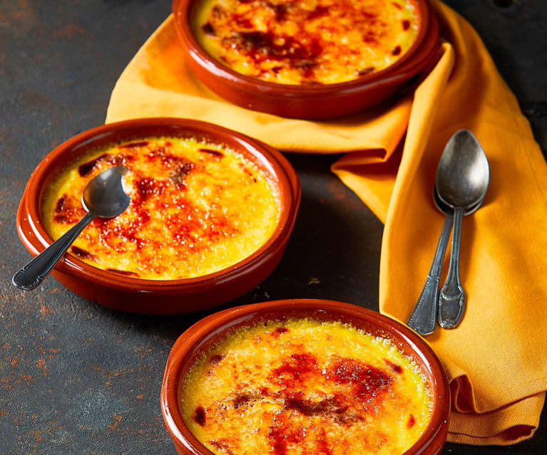
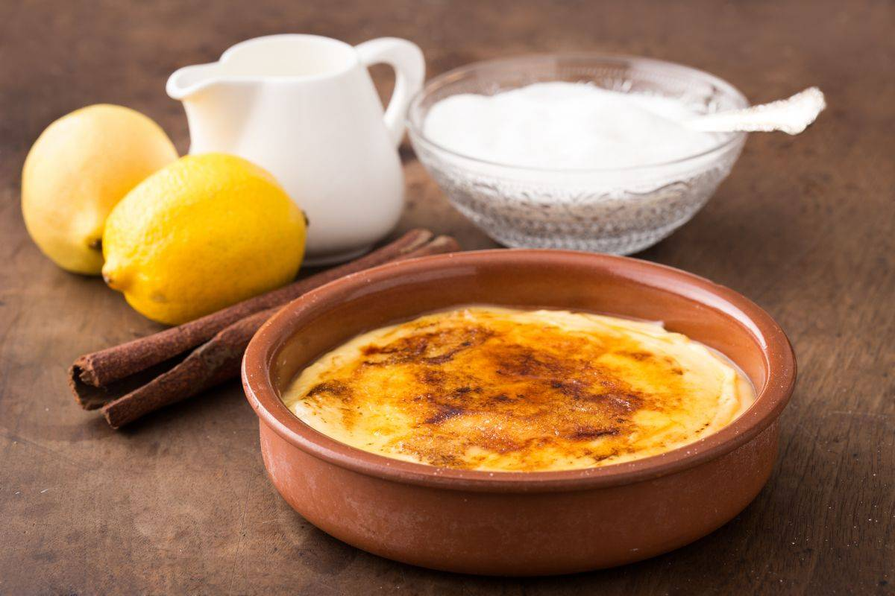
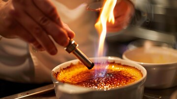

Postre: Crema catalana
Index:
La crema catalana es seguramente el postre más típico de la cocina catalana. Se trata de crema pastelera con una base de yema de huevo cubierta de una crujiente capa de azúcar caramelizado. Esta delicia se come durante todo el año, pero es especialmente típico en el día de San José.

Ingredientes
- 1 litro de leche entera
- 8 yemas de huevo
- 200 g de azúcar (100 g para la crema y 100 g para caramelizar)
- 40 g de maicena (fécula de maíz)
- 1 rama de canela
- La piel de un limón (solo la parte amarilla)

Preparación
- Cocina la pasta hasta que esté al dente, siguiendo las instrucciones del envase. Escúrrela y mezcla con una cucharada de mantequilla.
- Dora el bacon en una sartén con la otra cucharada de mantequilla hasta que esté crujiente. Si deseas, añade nata, mezcla bien y sazona con sal y pimienta.
- Incorpora la pasta cocida a la sartén con el bacon y revuelve para que la nata (si la usaste) se absorba un poco.
- Prepara la mezcla de huevo: en un bol, bate un huevo con una yema, sal y pimienta, y agrégalo a la pasta fuera del fuego, removiendo hasta que espese ligeramente sin que el huevo cuaje completamente.
- Sirve los macarrones de inmediato, espolvoreando con queso rallado (Parmesano o Pecorino) y un poco de cebollino picado si deseas.

Jefe: Xiang Junhao
Bar: Bar Emigrante
Volver al index
📋 Volver al menu